第三周 序列模型和注意力机制（Sequence models & Attention mechanism）
第三周 序列模型和注意力机制（Sequence models & Attention mechanism）3.1 基础模型（Basic Models）3.2 选择最可能的句子（Picking the most likely sentence）3.3 集束搜索（Beam Search）3.4 改进集束搜索（Refinements to Beam Search）3.5 集束搜索的误差分析（Error analysis in beam search）3.6 Bleu 得分（选修）（Bleu Score (optional)）3.7 注意力模型直观理解（Attention Model Intuition）3.8注意力模型（Attention Model）3.9语音识别（Speech recognition）3.10触发字检测（Trigger Word Detection）3.11结论和致谢（Conclusion and thank you）
3.1 基础模型（Basic Models）
在这一周，你将会学习seq2seq（sequence to sequence）模型，从机器翻译到语音识别，它们都能起到很大的作用，从最基本的模型开始。之后你还会学习集束搜索（Beam search）和注意力模型（Attention Model），一直到最后的音频模型，比如语音。
现在就开始吧，比如你想通过输入一个法语句子，比如这句 “Jane visite I'Afrique en septembre.”，将它翻译成一个英语句子，“Jane is visiting Africa in September.”。和之前一样，我们用 一直到来表示输入的句子的单词，然后我们用到来表示输出的句子的单词，那么，如何训练出一个新的网络来输入序列和输出序列呢？
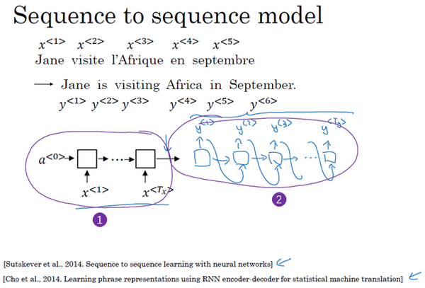
这里有一些方法，这些方法主要都来自于两篇论文，作者是Sutskever，Oriol Vinyals 和 Quoc Le，另一篇的作者是Kyunghyun Cho，Bart van Merrienboer，Caglar Gulcehre，Dzmitry Bahdanau，Fethi Bougares，Holger Schwen 和 Yoshua Bengio。
首先，我们先建立一个网络，这个网络叫做编码网络（encoder network）（上图编号1所示），它是一个RNN的结构， RNN的单元可以是GRU 也可以是LSTM。每次只向该网络中输入一个法语单词，将输入序列接收完毕后，这个RNN网络会输出一个向量来代表这个输入序列。之后你可以建立一个解码网络，我把它画出来（上图编号2所示），它以编码网络的输出作为输入，编码网络是左边的黑色部分（上图编号1所示），之后它可以被训练为每次输出一个翻译后的单词，一直到它输出序列的结尾或者句子结尾标记，这个解码网络的工作就结束了。和往常一样我们把每次生成的标记都传递到下一个单元中来进行预测，就像之前用语言模型合成文本时一样。
深度学习在近期最卓越的成果之一就是这个模型确实有效，在给出足够的法语和英语文本的情况下，如果你训练这个模型，通过输入一个法语句子来输出对应的英语翻译，这个模型将会非常有效。这个模型简单地用一个编码网络来对输入的法语句子进行编码，然后用一个解码网络来生成对应的英语翻译。
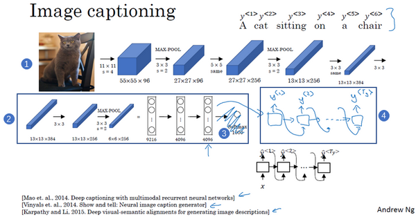
还有一个与此类似的结构被用来做图像描述，给出一张图片，比如这张猫的图片（上图编号1所示），它能自动地输出该图片的描述，一只猫坐在椅子上，那么你如何训练出这样的网络？通过输入图像来输出描述，像这个句子一样。
方法如下，在之前的卷积网络课程中，你已经知道了如何将图片输入到卷积神经网络中，比如一个预训练的AlexNet结构（上图编号2方框所示），然后让其学习图片的编码，或者学习图片的一系列特征。现在幻灯片所展示的就是AlexNet结构，我们去掉最后的softmax单元（上图编号3所示），这个预训练的AlexNet结构会给你一个4096维的特征向量，向量表示的就是这只猫的图片，所以这个预训练网络可以是图像的编码网络。现在你得到了一个4096维的向量来表示这张图片，接着你可以把这个向量输入到RNN中（上图编号4方框所示），RNN要做的就是生成图像的描述，每次生成一个单词，这和我们在之前将法语译为英语的机器翻译中看到的结构很像，现在你输入一个描述输入的特征向量，然后让网络生成一个输出序列，或者说一个一个地输出单词序列。
事实证明在图像描述领域，这种方法相当有效，特别是当你想生成的描述不是特别长时。据我所知，这种模型首先是由Junhua Mao，Wei Xu，Yi Yang，Jiang Wang，Zhiheng Huang和Alan Yuille提出的，尽管有几个团队都几乎在同一时间构造出了非常相似的模型，因为还有另外两个团队也在同一时间得出了相似的结论。我觉得有可能Mao的团队和Oriol Vinyals，Alexander Toshev，Samy Bengio和Dumitru Erhan，还有Andrej Karpathy和Fei-Fei Yi是同一个团队。
现在你知道了基本的seq2seq模型是怎样运作的，以及image to sequence模型或者说图像描述模型是怎样运作的。不过这两个模型运作方式有一些不同，主要体现在如何用语言模型合成新的文本，并生成对应序列的方面。一个主要的区别就是你大概不会想得到一个随机选取的翻译，你想要的是最准确的翻译，或者说你可能不想要一个随机选取的描述，你想要的是最好的最贴切的描述，我们将在下节视频中介绍如何生成这些序列。
3.2 选择最可能的句子（Picking the most likely sentence）
在seq2seq机器翻译模型和我们在第一周课程所用的语言模型之间有很多相似的地方，但是它们之间也有许多重要的区别，让我们来一探究竟。
你可以把机器翻译想成是建立一个条件语言模型，在语言模型中上方是一个我们在第一周所建立的模型，这个模型可以让你能够估计句子的可能性，这就是语言模型所做的事情。你也可以将它用于生成一个新的句子，如果你在图上的该处（下图编号1所示），有和，那么在该例中，但是、等在这里并不重要。为了让图片看起来更简洁，我把它们先抹去，可以理解为是一个全为0的向量，然后、等都等于之前所生成的输出，这就是所说的语言模型。
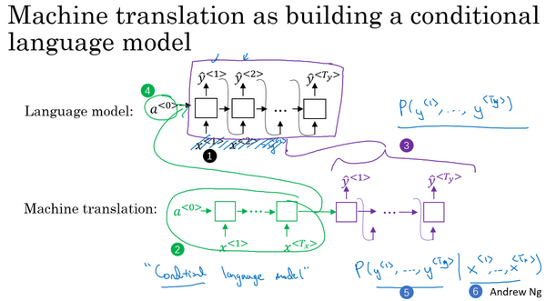
而机器翻译模型是下面这样的，我这里用两种不同的颜色来表示，即绿色和紫色，用绿色（上图编号2所示）表示encoder网络，用紫色（上图编号3所示）表示decoder网络。你会发现decoder网络看起来和刚才所画的语言模型几乎一模一样，机器翻译模型其实和语言模型非常相似，不同在于语言模型总是以零向量（上图编号4所示）开始，而encoder网络会计算出一系列向量（上图编号2所示）来表示输入的句子。有了这个输入句子，decoder网络就可以以这个句子开始，而不是以零向量开始，所以我把它叫做条件语言模型（conditional language model）。相比语言模型，输出任意句子的概率，翻译模型会输出句子的英文翻译（上图编号5所示），这取决于输入的法语句子（上图编号6所示）。换句话说，你将估计一个英文翻译的概率，比如估计这句英语翻译的概率，"Jane is visiting Africa in September."，这句翻译是取决于法语句子，"Jane visite I'Afrique en septembre."，这就是英语句子相对于输入的法语句子的可能性，所以它是一个条件语言模型。
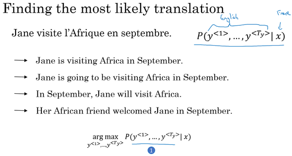
现在，假如你想真正地通过模型将法语翻译成英文，通过输入的法语句子模型将会告诉你各种英文翻译所对应的可能性。在这里是法语句子"Jane visite l'Afrique en septembre."，而它将告诉你不同的英语翻译所对应的概率。显然你不想让它随机地进行输出，如果你从这个分布中进行取样得到，可能取样一次就能得到很好的翻译，"Jane is visiting Africa in September."。但是你可能也会得到一个截然不同的翻译，"Jane is going to be visiting Africa in September."，这句话听起来有些笨拙，但它不是一个糟糕的翻译，只是不是最好的而已。有时你也会偶然地得到这样的翻译，"In September, Jane will visit Africa."，或者有时候你还会得到一个很糟糕的翻译，"Her African friend welcomed Jane in September."。所以当你使用这个模型来进行机器翻译时，你并不是从得到的分布中进行随机取样，而是你要找到一个英语句子（上图编号1所示），使得条件概率最大化。所以在开发机器翻译系统时，你需要做的一件事就是想出一个算法，用来找出合适的值，使得该项最大化，而解决这种问题最通用的算法就是束搜索(Beam Search)，你将会在下节课见到它。
不过在了解束搜索之前，你可能会问一个问题，为什么不用贪心搜索(Greedy Search)呢？贪心搜索是一种来自计算机科学的算法，生成第一个词的分布以后，它将会根据你的条件语言模型挑选出最有可能的第一个词进入你的机器翻译模型中，在挑选出第一个词之后它将会继续挑选出最有可能的第二个词，然后继续挑选第三个最有可能的词，这种算法就叫做贪心搜索，但是你真正需要的是一次性挑选出整个单词序列，从、到来使得整体的概率最大化。所以这种贪心算法先挑出最好的第一个词，在这之后再挑最好的第二词，然后再挑第三个，这种方法其实并不管用，为了证明这个观点，我们来考虑下面两种翻译。
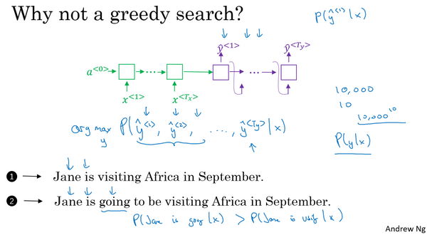
第一串（上图编号1所示）翻译明显比第二个（上图编号2所示）好，所以我们希望机器翻译模型会说第一个句子的比第二个句子要高，第一个句子对于法语原文来说更好更简洁，虽然第二个也不错，但是有些啰嗦，里面有很多不重要的词。但如果贪心算法挑选出了"Jane is"作为前两个词，因为在英语中going更加常见，于是对于法语句子来说"Jane is going"相比"Jane is visiting"会有更高的概率作为法语的翻译，所以很有可能如果你仅仅根据前两个词来估计第三个词的可能性，得到的就是going，最终你会得到一个欠佳的句子，在模型中这不是一个最好的选择。
我知道这种说法可能比较粗略，但是它确实是一种广泛的现象，当你想得到单词序列、一直到最后一个词总体的概率时，一次仅仅挑选一个词并不是最佳的选择。当然，在英语中各种词汇的组合数量还有很多很多，如果你的字典中有10,000个单词，并且你的翻译可能有10个词那么长，那么可能的组合就有10,000的10次方这么多，这仅仅是10个单词的句子，从这样大一个字典中来挑选单词，所以可能的句子数量非常巨大，不可能去计算每一种组合的可能性。所以这时最常用的办法就是用一个近似的搜索算法，这个近似的搜索算法做的就是它会尽力地，尽管不一定总会成功，但它将挑选出句子使得条件概率最大化，尽管它不能保证找到的值一定可以使概率最大化，但这已经足够了。
最后总结一下，在本视频中，你看到了机器翻译是如何用来解决条件语言模型问题的，这个模型和之前的语言模型一个主要的区别就是，相比之前的模型随机地生成句子，在该模型中你要找到最有可能的英语句子，最可能的英语翻译，但是可能的句子组合数量过于巨大，无法一一列举，所以我们需要一种合适的搜索算法，让我们在下节课中学习集束搜索。
3.3 集束搜索（Beam Search）
这节视频中你会学到集束搜索（beam search）算法，上节视频中我们讲了对于机器翻译来说，给定输入，比如法语句子，你不会想要输出一个随机的英语翻译结果，你想要一个最好的，最可能的英语翻译结果。对于语音识别也一样，给定一个输入的语音片段，你不会想要一个随机的文本翻译结果，你想要最好的，最接近原意的翻译结果，集束搜索就是解决这个最常用的算法。这节视频里，你会明白怎么把集束搜索算法应用到你自己的工作中，就用我们的法语句子的例子来试一下集束搜索吧。
“Jane visite l'Afrique en Septembre.”（法语句子），我们希望翻译成英语，"Jane is visiting Africa in September".（英语句子），集束搜索算法首先做的就是挑选要输出的英语翻译中的第一个单词。这里我列出了10,000个词的词汇表（下图编号1所示），为了简化问题，我们忽略大小写，所有的单词都以小写列出来。在集束搜索的第一步中我用这个网络部分，绿色是编码部分（下图编号2所示），紫色是解码部分（下图编号3所示），来评估第一个单词的概率值，给定输入序列，即法语作为输入，第一个输出的概率值是多少。
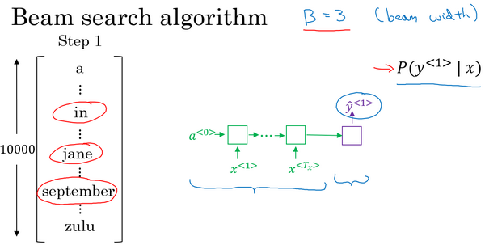
贪婪算法只会挑出最可能的那一个单词，然后继续。而集束搜索则会考虑多个选择，集束搜索算法会有一个参数B，叫做集束宽（beam width）。在这个例子中我把这个集束宽设成3，这样就意味着集束搜索不会只考虑一个可能结果，而是一次会考虑3个，比如对第一个单词有不同选择的可能性，最后找到in、jane、september，是英语输出的第一个单词的最可能的三个选项，然后集束搜索算法会把结果存到计算机内存里以便后面尝试用这三个词。如果集束宽设的不一样，如果集束宽这个参数是10的话，那么我们跟踪的不仅仅3个，而是10个第一个单词的最可能的选择。所以要明白，为了执行集束搜索的第一步，你需要输入法语句子到编码网络，然后会解码这个网络，这个softmax层（上图编号3所示）会输出10,000个概率值，得到这10,000个输出的概率值，取前三个存起来。
让我们看看集束搜索算法的第二步，已经选出了in、jane、september作为第一个单词三个最可能的选择，集束算法接下来会针对每个第一个单词考虑第二个单词是什么，单词in后面的第二个单词可能是a或者是aaron，我就是从词汇表里把这些词列了出来，或者是列表里某个位置，september，可能是列表里的 visit，一直到字母z，最后一个单词是zulu（下图编号1所示）。

为了评估第二个词的概率值，我们用这个神经网络的部分，绿色是编码部分（上图编号2所示），而对于解码部分，当决定单词in后面是什么，别忘了解码器的第一个输出，我把设为单词in（上图编号3所示），然后把它喂回来，这里就是单词in（上图编号4所示），因为它的目的是努力找出第一个单词是in的情况下，第二个单词是什么。这个输出就是（上图编号5所示），有了这个连接（上图编号6所示），就是这里的第一个单词in（上图编号4所示）作为输入，这样这个网络就可以用来评估第二个单词的概率了，在给定法语句子和翻译结果的第一个单词in的情况下。
注意，在第二步里我们更关心的是要找到最可能的第一个和第二个单词对，所以不仅仅是第二个单词有最大的概率，而是第一个、第二个单词对有最大的概率（上图编号7所示）。按照条件概率的准则，这个可以表示成第一个单词的概率（上图编号8所示）乘以第二个单词的概率（上图编号9所示），这个可以从这个网络部分里得到（上图编号10所示），对于已经选择的in、jane、september这三个单词，你可以先保存这个概率值（上图编号8所示），然后再乘以第二个概率值（上图编号9所示）就得到了第一个和第二个单词对的概率（上图编号7所示）。
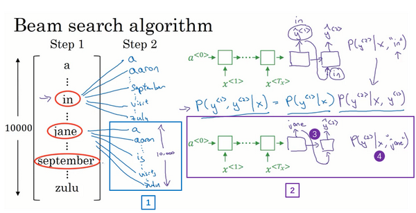
现在你已经知道在第一个单词是in的情况下如何评估第二个单词的概率，现在第一个单词是jane，道理一样，句子可能是"jane a"、"jane aaron"，等等到"jane is"、"jane visits"等等（上图编号1所示）。你会用这个新的网络部分（上图编号2所示），我在这里画一条线，代表从，即jane，连接jane（上图编号3所示），那么这个网络部分就可以告诉你给定输入和第一个词是jane下，第二个单词的概率了（上图编号4所示），和上面一样，你可以乘以得到。
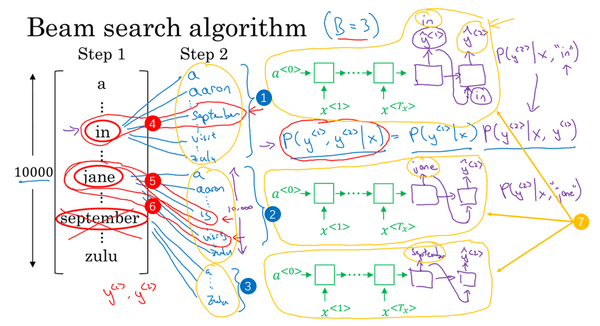
针对第二个单词所有10,000个不同的选择，最后对于单词september也一样，从单词a到单词zulu，用这个网络部分，我把它画在这里。来看看如果第一个单词是september，第二个单词最可能是什么。所以对于集束搜索的第二步，由于我们一直用的集束宽为3，并且词汇表里有10,000个单词，那么最终我们会有3乘以10,000也就是30,000个可能的结果，因为这里（上图编号1所示）是10,000，这里（上图编号2所示）是10,000，这里（上图编号3所示）是10,000，就是集束宽乘以词汇表大小，你要做的就是评估这30,000个选择。按照第一个词和第二个词的概率，然后选出前三个，这样又减少了这30,000个可能性，又变成了3个，减少到集束宽的大小。假如这30,000个选择里最可能的是“in September”（上图编号4所示）和“jane is”（上图编号5所示），以及“jane visits”（上图编号6所示），画的有点乱，但这就是这30,000个选择里最可能的三个结果，集束搜索算法会保存这些结果，然后用于下一次集束搜索。
注意一件事情，如果集束搜索找到了第一个和第二个单词对最可能的三个选择是“in September”或者“jane is”或者“jane visits”，这就意味着我们去掉了september作为英语翻译结果的第一个单词的选择，所以我们的第一个单词现在减少到了两个可能结果，但是我们的集束宽是3，所以还是有，对的三个选择。
在我们进入集束搜索的第三步之前，我还想提醒一下因为我们的集束宽等于3，每一步我们都复制3个，同样的这种网络来评估部分句子和最后的结果，由于集束宽等于3，我们有三个网络副本（上图编号7所示），每个网络的第一个单词不同，而这三个网络可以高效地评估第二个单词所有的30,000个选择。所以不需要初始化30,000个网络副本，只需要使用3个网络的副本就可以快速的评估softmax的输出，即的10,000个结果。
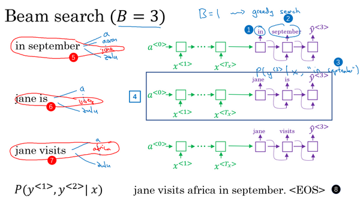
让我们快速解释一下集束搜索的下一步，前面说过前两个单词最可能的选择是“in September”和“jane is”以及“jane visits”，对于每一对单词我们应该保存起来，给定输入，即法语句子作为的情况下，和的概率值和前面一样，现在我们考虑第三个单词是什么，可以是“in September a”，可以是“in September aaron”，一直到“in September zulu”。为了评估第三个单词可能的选择，我们用这个网络部分，第一单词是in（上图编号1所示），第二个单词是september（上图编号2所示），所以这个网络部分可以用来评估第三个单词的概率，在给定输入的法语句子和给定的英语输出的前两个单词“in September”情况下（上图编号3所示）。对于第二个片段来说也一样，就像这样一样（上图编号4所示），对于“jane visits”也一样，然后集束搜索还是会挑选出针对前三个词的三个最可能的选择，可能是“in september jane”（上图编号5所示），“Jane is visiting”也很有可能（上图编号6所示），也很可能是“Jane visits Africa”（上图编号7所示）。
然后继续，接着进行集束搜索的第四步，再加一个单词继续，最终这个过程的输出一次增加一个单词，集束搜索最终会找到“Jane visits africa in september”这个句子，终止在句尾符号（上图编号8所示），用这种符号的系统非常常见，它们会发现这是最有可能输出的一个英语句子。在本周的练习中，你会看到更多的执行细节，同时，你会运用到这个集束算法，在集束宽为3时，集束搜索一次只考虑3个可能结果。注意如果集束宽等于1，只考虑1种可能结果，这实际上就变成了贪婪搜索算法，上个视频里我们已经讨论过了。但是如果同时考虑多个，可能的结果比如3个，10个或者其他的个数，集束搜索通常会找到比贪婪搜索更好的输出结果。
你已经了解集束搜索是如何工作的了，事实上还有一些额外的提示和技巧的改进能够使集束算法更高效，我们在下个视频中一探究竟。
3.4 改进集束搜索（Refinements to Beam Search）
上个视频中, 你已经学到了基本的束搜索算法(the basic beam search algorithm)，这个视频里,我们会学到一些技巧, 能够使算法运行的更好。长度归一化（Length normalization）就是对束搜索算法稍作调整的一种方式，帮助你得到更好的结果，下面介绍一下它。
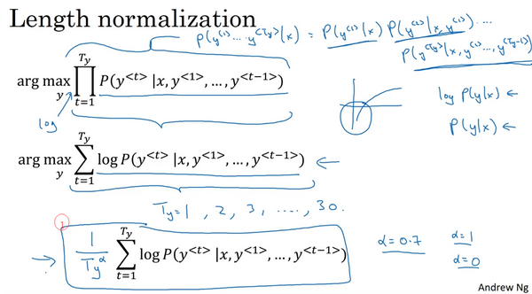
前面讲到束搜索就是最大化这个概率，这个乘积就是，可以表示成: …
这些符号看起来可能比实际上吓人，但这就是我们之前见到的乘积概率（the product probabilities）。如果计算这些，其实这些概率值都是小于1的，通常远小于1。很多小于1的数乘起来，会得到很小很小的数字，会造成数值下溢（numerical underflow）。数值下溢就是数值太小了，导致电脑的浮点表示不能精确地储存，因此在实践中,我们不会最大化这个乘积，而是取值。如果在这加上一个，最大化这个求和的概率值，在选择最可能的句子时，你会得到同样的结果。所以通过取，我们会得到一个数值上更稳定的算法，不容易出现四舍五入的误差，数值的舍入误差（rounding errors）或者说数值下溢（numerical underflow）。因为函数它是严格单调递增的函数，最大化，因为对数函数，这就是函数，是严格单调递增的函数，所以最大化和最大化结果一样。如果一个值能够使前者最大，就肯定能使后者也取最大。所以实际工作中，我们总是记录概率的对数和（the sum of logs of the probabilities），而不是概率的乘积（the production of probabilities）。
对于目标函数（this objective function），还可以做一些改变，可以使得机器翻译表现的更好。如果参照原来的目标函数（this original objective），如果有一个很长的句子，那么这个句子的概率会很低，因为乘了很多项小于1的数字来估计句子的概率。所以如果乘起来很多小于1的数字，那么就会得到一个更小的概率值，所以这个目标函数有一个缺点，它可能不自然地倾向于简短的翻译结果，它更偏向短的输出，因为短句子的概率是由更少数量的小于1的数字乘积得到的，所以这个乘积不会那么小。顺便说一下，这里也有同样的问题，概率的值通常小于等于1，实际上在的这个范围内，所以加起来的项越多，得到的结果越负，所以对这个算法另一个改变也可以使它表现的更好，也就是我们不再最大化这个目标函数了，我们可以把它归一化，通过除以翻译结果的单词数量（normalize this by the number of words in your translation）。这样就是取每个单词的概率对数值的平均了，这样很明显地减少了对输出长的结果的惩罚（this significantly reduces the penalty for outputting longer translations.）。
在实践中，有个探索性的方法，相比于直接除，也就是输出句子的单词总数，我们有时会用一个更柔和的方法（a softer approach），在上加上指数，可以等于0.7。如果等于1，就相当于完全用长度来归一化，如果等于0，的0次幂就是1，就相当于完全没有归一化，这就是在完全归一化和没有归一化之间。就是算法另一个超参数（hyper parameter），需要调整大小来得到最好的结果。不得不承认，这样用实际上是试探性的，它并没有理论验证。但是大家都发现效果很好，大家都发现实践中效果不错，所以很多人都会这么做。你可以尝试不同的值，看看哪一个能够得到最好的结果。
总结一下如何运行束搜索算法。当你运行束搜索时，你会看到很多长度等于1的句子，很多长度等于2的句子，很多长度等于3的句子，等等。可能运行束搜索30步，考虑输出的句子可能达到，比如长度30。因为束宽为3，你会记录所有这些可能的句子长度，长度为1、2、 3、 4 等等一直到30的三个最可能的选择。然后针对这些所有的可能的输出句子，用这个式子（上图编号1所示）给它们打分，取概率最大的几个句子，然后对这些束搜索得到的句子，计算这个目标函数。最后从经过评估的这些句子中，挑选出在归一化的 概率目标函数上得分最高的一个（you pick the one that achieves the highest value on this normalized log probability objective.），有时这个也叫作归一化的对数似然目标函数（a normalized log likelihood objective）。这就是最终输出的翻译结果，这就是如何实现束搜索。这周的练习中你会自己实现这个算法。
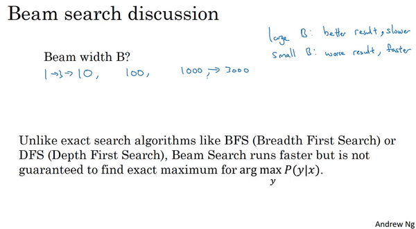
最后还有一些实现的细节，如何选择束宽B。B越大，你考虑的选择越多，你找到的句子可能越好，但是B越大，你的算法的计算代价越大，因为你要把很多的可能选择保存起来。最后我们总结一下关于如何选择束宽B的一些想法。接下来是针对或大或小的B各自的优缺点。如果束宽很大，你会考虑很多的可能，你会得到一个更好的结果，因为你要考虑很多的选择，但是算法会运行的慢一些，内存占用也会增大，计算起来会慢一点。而如果你用小的束宽，结果会没那么好，因为你在算法运行中，保存的选择更少，但是你的算法运行的更快，内存占用也小。在前面视频里，我们例子中用了束宽为3，所以会保存3个可能选择，在实践中这个值有点偏小。在产品中，经常可以看到把束宽设到10，我认为束宽为100对于产品系统来说有点大了，这也取决于不同应用。但是对科研而言，人们想压榨出全部性能，这样有个最好的结果用来发论文，也经常看到大家用束宽为1000或者3000，这也是取决于特定的应用和特定的领域。在你实现你的应用时，尝试不同的束宽的值，当B很大的时候，性能提高会越来越少。对于很多应用来说，从束宽1，也就是贪心算法，到束宽为3、到10，你会看到一个很大的改善。但是当束宽从1000增加到3000时，效果就没那么明显了。对于之前上过计算机科学课程的同学来说，如果你熟悉计算机科学里的搜索算法（computer science search algorithms）, 比如广度优先搜索（BFS, Breadth First Search algorithms），或者深度优先搜索（DFS, Depth First Search），你可以这样想束搜索，不像其他你在计算机科学算法课程中学到的算法一样。如果你没听说过这些算法也不要紧，但是如果你听说过广度优先搜索和深度优先搜索，不同于这些算法，这些都是精确的搜索算法（exact search algorithms），束搜索运行的更快，但是不能保证一定能找到argmax的准确的最大值。如果你没听说过广度优先搜索和深度优先搜索，也不用担心，这些对于我们的目标也不重要，如果你听说过，这就是束搜索和其他算法的关系。
好，这就是束搜索。这个算法广泛应用在多产品系统或者许多商业系统上，在深度学习系列课程中的第三门课中，我们讨论了很多关于误差分析（error analysis）的问题。事实上在束搜索上做误差分析是我发现的最有用的工具之一。有时你想知道是否应该增大束宽，我的束宽是否足够好，你可以计算一些简单的东西来指导你需要做什么，来改进你的搜索算法。我们在下个视频里进一步讨论。
3.5 集束搜索的误差分析（Error analysis in beam search）
在这五门课中的第三门课里，你了解了误差分析是如何能够帮助你集中时间做你的项目中最有用的工作，束搜索算法是一种近似搜索算法（an approximate search algorithm），也被称作启发式搜索算法（a heuristic search algorithm），它不总是输出可能性最大的句子，它仅记录着B为前3或者10或是100种可能。那么如果束搜索算法出现错误会怎样呢?
本节视频中，你将会学习到误差分析和束搜索算法是如何相互起作用的，以及你怎样才能发现是束搜索算法出现了问题，需要花时间解决，还是你的RNN模型出了问题，要花时间解决。我们先来看看如何对束搜索算法进行误差分析。
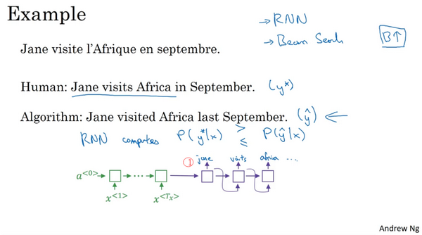
我们来用这个例子说明： “Jane visite l'Afrique en septembre”。假如说，在你的机器翻译的dev集中，也就是开发集（development set），人工是这样翻译的: Jane visits Africa in September,我会将这个标记为。这是一个十分不错的人工翻译结果，不过假如说，当你在已经完成学习的RNN模型，也就是已完成学习的翻译模型中运行束搜索算法时，它输出了这个翻译结果：Jane visited Africa last September，我们将它标记为。这是一个十分糟糕的翻译，它实际上改变了句子的原意，因此这不是个好翻译。
你的模型有两个主要部分，一个是神经网络模型，或说是序列到序列模型（sequence to sequence model），我们将这个称作是RNN模型，它实际上是个编码器和解码器（ an encoder and a decoder）。另一部分是束搜索算法，以某个集束宽度B运行。如果你能够找出造成这个错误，这个不太好的翻译的原因，是两个部分中的哪一个，不是很好吗? RNN (循环神经网络)是更可能是出错的原因呢，还是束搜索算法更可能是出错的原因呢？你在第三门课中了解到了大家很容易想到去收集更多的训练数据，这总归没什么坏处。所以同样的，大家也会觉得不行就增大束宽，也是不会错的，或者说是很大可能是没有危害的。但是就像单纯获取更多训练数据，可能并不能得到预期的表现结果。相同的，单纯增大束宽也可能得不到你想要的结果，不过你怎样才能知道是不是值得花时间去改进搜索算法呢? 下面我们来分解这个问题弄清楚什么情况下该用什么解决办法。
RNN (循环神经网络)实际上是个编码器和解码器（the encoder and the decoder），它会计算。所以举个例子，对于这个句子：Jane visits Africa in September，你将Jane visits Africa填入这里（上图编号1所示），同样，我现在忽略了字母的大小写，后面也是一样，然后这个就会计算。结果表明，你此时能做的最有效的事就是用这个模型来计算，同时也用你的RNN模型来计算，然后比较一下这两个值哪个更大。有可能是左边大于右边，也有可能是小于，其实应该是小于或等于，对吧。取决于实际是哪种情况，你就能够更清楚地将这个特定的错误归咎于RNN或是束搜索算法，或说是哪个负有更大的责任。我们来探究一下其中的逻辑。
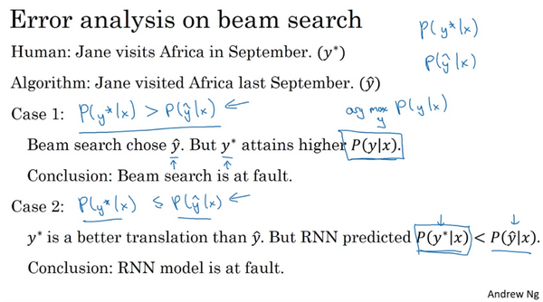
这是之前幻灯片里的两个句子。记住，我们是要计算和，然后比较这两个哪个更大，所以就会有两种情况。
第一种情况，RNN模型的输出结果 大于，这意味着什么呢? 束搜索算法选择了 ，对吧? 你得到的方式是，你用一个RNN模型来计算，然后束搜索算法做的就是尝试寻找使最大的，不过在这种情况下，相比于，的值更大，因此你能够得出束搜索算法实际上不能够给你一个能使最大化的值，因为束搜索算法的任务就是寻找一个的值来使这项更大，但是它却选择了，而实际上能得到更大的值。因此这种情况下你能够得出是束搜索算法出错了。那另一种情况是怎样的呢?
第二种情况是小于或等于对吧？这两者之中总有一个是真的。情况1或是情况2总有一个为真。情况2你能够总结出什么呢? 在我们的例子中， 是比 更好的翻译结果，不过根据RNN模型的结果， 是小于的，也就是说，相比于，成为输出的可能更小。因此在这种情况下，看来是RNN模型出了问题。同时可能值得在RNN模型上花更多时间。这里我少讲了一些有关长度归一化（length normalizations）的细节。这里我略过了有关长度归一化的细节，如果你用了某种长度归一化，那么你要做的就不是比较这两种可能性大小，而是比较长度归一化后的最优化目标函数值。不过现在先忽略这种复杂的情况。第二种情况表明虽然是一个更好的翻译结果，RNN模型却赋予它更低的可能性，是RNN模型出现了问题。
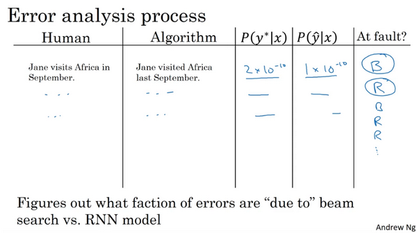
所以误差分析过程看起来就像下面这样。你先遍历开发集，然后在其中找出算法产生的错误，这个例子中，假如说的值为2 x 10-10，而的值为 1 x10-10，根据上页幻灯片中的逻辑关系，这种情况下我们得知束搜索算法实际上选择了比可能性更低的，因此我会说束搜索算法出错了。我将它缩写为B。接着你继续遍历第二个错误，再来看这些可能性。也许对于第二个例子来说，你认为是RNN模型出现了问题，我会用缩写R来代表RNN。再接着你遍历了更多的例子，有时是束搜索算法出现了问题，有时是模型出现了问题，等等。通过这个过程，你就能够执行误差分析，得出束搜索算法和RNN模型出错的比例是多少。有了这样的误差分析过程，你就可以对开发集中每一个错误例子，即算法输出了比人工翻译更差的结果的情况，尝试确定这些错误，是搜索算法出了问题，还是生成目标函数(束搜索算法使之最大化)的RNN模型出了问题。并且通过这个过程，你能够发现这两个部分中哪个是产生更多错误的原因，并且只有当你发现是束搜索算法造成了大部分错误时，才值得花费努力增大集束宽度。相反地，如果你发现是RNN模型出了更多错，那么你可以进行更深层次的分析，来决定是需要增加正则化还是获取更多的训练数据，抑或是尝试一个不同的网络结构，或是其他方案。你在第三门课中，了解到各种技巧都能够应用在这里。
这就是束搜索算法中的误差分析，我认为这个特定的误差分析过程是十分有用的，它可以用于分析近似最佳算法(如束搜索算法)，这些算法被用来优化学习算法(例如序列到序列模型/RNN)输出的目标函数。也就是我们这些课中一直讨论的。学会了这个方法，我希望你能够在你的应用里更有效地运用好这些类型的模型。
3.6 Bleu 得分（选修）（Bleu Score (optional)）
机器翻译（machine translation）的一大难题是一个法语句子可以有多种英文翻译而且都同样好，所以当有多个同样好的答案时，怎样评估一个机器翻译系统呢？不像图像识别（image recognition），只有一个正确答案，就只要测量准确性就可以了。如果有多个不错的答案，要怎样衡量准确性呢? 常见的解决办法是，通过一个叫做BLEU得分（the BLEU score）的东西来解决。所以，在这个选修视频中，我想与你分享，我想让你了解BLEU得分是怎样工作的。
假如给你一个法语句子：Le chat est sur le tapis，然后给你一个这个句子的人工翻译作参考：The cat is on the mat。不过有多种相当不错的翻译。所以一个不同的人，也许会将其翻译为：There is a cat on the mat，同时，实际上这两个都是很好的，都准确地翻译了这个法语句子。BLEU得分做的就是，给定一个机器生成的翻译，它能够自动地计算一个分数来衡量机器翻译的好坏。直觉告诉我们，只要这个机器生成的翻译与任何一个人工翻译的结果足够接近，那么它就会得到一个高的BLEU分数。顺便提一下BLEU代表bilingual evaluation understudy (双语评估替补)。在戏剧界，侯补演员(understudy)学习资深的演员的角色，这样在必要的时候，他们就能够接替这些资深演员。而BLEU的初衷是相对于请评估员（ask human evaluators），人工评估机器翻译系统（the machine translation system），BLEU得分就相当于一个侯补者，它可以代替人类来评估机器翻译的每一个输出结果。BLEU得分是由Kishore Papineni, Salim Roukos，Todd Ward和Wei-Jing Zhu发表的这篇论文十分有影响力并且实际上也是一篇很好读的文章。所以如果有时间的话，我推荐你读一下。BLEU得分背后的理念是观察机器生成的翻译，然后看生成的词是否出现在少一个人工翻译参考之中。因此这些人工翻译的参考会包含在开发集或是测试集中。
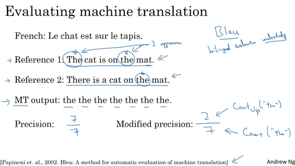
（参考论文：Papineni, Kishore& Roukos, Salim & Ward, Todd & Zhu, Wei-jing. (2002). BLEU: a Method for Automatic Evaluation of Machine Translation.10.3115/1073083.1073135.）
现在，我们来看一个极端的例子。我们假设机器翻译系统缩写为MT。机器翻译 (MT)的输出是：the the the the the the the。这显然是一个十分糟糕的翻译。衡量机器翻译输出质量的方法之一是观察输出结果的每一个词看其是否出现在参考中，这被称做是机器翻译的精确度（a precision of the machine translation output）。这个情况下，机器翻译输出了七个单词并且这七个词中的每一个都出现在了参考1或是参考2。单词the在两个参考中都出现了，所以看上去每个词都是很合理的。因此这个输出的精确度就是7/7，看起来是一个极好的精确度。这就是为什么把出现在参考中的词在MT输出的所有词中所占的比例作为精确度评估标准并不是很有用的原因。因为它似乎意味着，例子中MT输出的翻译有很高的精确度，因此取而代之的是我们要用的这个改良后的精确度评估方法，我们把每一个单词的记分上限定为它在参考句子中出现的最多次数。在参考1中，单词the出现了两次，在参考2中，单词the只出现了一次。而2比1大，所以我们会说，单词the的得分上限为2。有了这个改良后的精确度，我们就说，这个输出句子的得分为2/7，因为在7个词中，我们最多只能给它2分。所以这里分母就是7个词中单词the总共出现的次数，而分子就是单词the出现的计数。我们在达到上限时截断计数，这就是改良后的精确度评估（the modified precision measure）。
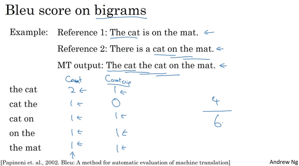
到目前为止，我们都只是关注单独的单词，在BLEU得分中，你不想仅仅考虑单个的单词，你也许也想考虑成对的单词，我们定义一下二元词组（bigrams）的BLEU得分。bigram的意思就是相邻的两个单词。现在我们来看看怎样用二元词组来定义BLEU得分，并且这仅仅只是最终的BLEU得分的一部分。我们会考虑一元词组（unigrams）也就是单个单词以及二元词组（bigrams），即成对的词，同时也许会有更长的单词序列，比如说三元词组（trigrams）。意思是三个挨在一起的词。我们继续刚才的例子，还是前面出现过的参考1和2，不过现在我们假定机器翻译输出了稍微好一点的翻译:The cat the cat on the mat，仍然不是一个好的翻译，不过也许比上一个好一些。这里，可能的二元词组有the cat ，忽略大小写，接着是cat the， 这是另一个二元词组，然后又是the cat。不过我已经有了，所以我们跳过它，然后下一个是cat on，然后是on the，再然后是the mat。所以这些就是机器翻译中的二元词组。好，我们来数一数每个二元词组出现了多少次。the cat出现了两次 ，cat the出现了一次，剩下的都只出现了一次。最后 ，我们来定义一下截取计数（the clipped count）。也就是Count_clip。为了定义它，我们以这列的值为基础，但是给算法设置得分上限，上限值为二元词组出现在参考1或2中的最大次数。the cat在两个参考中最多出现一次，所以我将截取它的计数为1。cat the它并没有出现在参考1和参考2中，所以我将它截取为0。cat on ，好，它出现了一次，我们就记1分。on the出现一次就记1分，the mat出现了一次，所以这些就是截取完的计数（the clipped counts）。我们把所有的这些计数都截取了一遍，实际上就是将它们降低使之不大于二元词组出现在参考中的次数。最后，修改后的二元词组的精确度就是count_clip之和。因此那就是4除以二元词组的总个数，也就是6。因此是4/6也就是2/3为二元词组改良后的精确度。
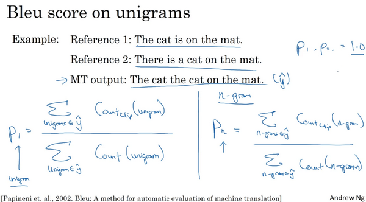
现在我们将它公式化。基于我们在一元词组中学到的内容，我们将改良后的一元词组精确度定义为，代表的是精确度。这里的下标1的意思是一元词组。不过它定义为一元词组之和，也就是对机器翻译结果中所有单词求和，MT 输出就是，Countclip(unigram)。除以机器翻译输出中的一元词组出现次数之和。因此这个就是最终结果应该是两页幻灯片前得到的2/7。这里的1指代的是一元词组，意思是我们在考虑单独的词，你也可以定义为元词组精确度，用n-gram替代掉一元词组。所以这就是机器翻译输出中的元词组的countclip之和除以元词组的出现次数之和。因此这些精确度或说是这些改良后的精确度得分评估的是一元词组或是二元词组。就是我们前页幻灯片中做的，或者是三元词组，也就是由三个词组成的，甚至是取更大数值的元词组。这个方法都能够让你衡量机器翻译输出中与参考相似重复的程度。另外，你能够确信如果机器翻译输出与参考1或是参考2完全一致的话，那么所有的这些、等等的值，都会等于1.0。为了得到改良后的1.0的精确度，只要你的输出与参考之一完全相同就能满足，不过有时即使输出结果并不完全与参考相同，这也是有可能实现的。你可以将它们以另一种方式组合，但愿仍能得到不错的翻译结果。
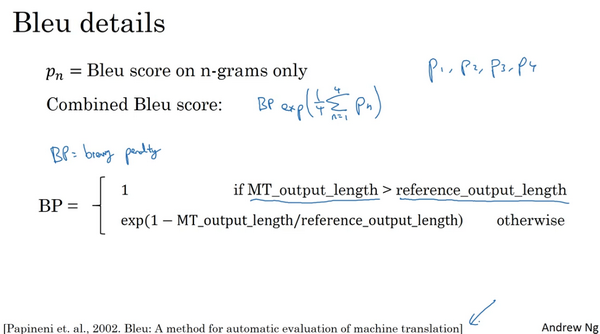
最后，我们将这些组合一下来构成最终的BLEU得分。就是元词组这一项的BLEU得分，也是计算出的元词组改良后的精确度，按照惯例，为了用一个值来表示你需要计算，， ，。然后将它们用这个公式组合在一起，就是取平均值。按照惯例BLEU得分被定义为，，对这个线性运算进行乘方运算，乘方是严格单调递增的运算，我们实际上会用额外的一个叫做BP 的惩罚因子（the BP penalty）来调整这项。BP的意思是“简短惩罚”（ brevity penalty）。这些细节也许并不是十分重要，但是你可以大致了解一下。 事实表明，如果你输出了一个非常短的翻译，那么它会更容易得到一个高精确度。因为输出的大部分词可能都出现在参考之中，不过我们并不想要特别短的翻译结果。因此简短惩罚(BP)就是一个调整因子，它能够惩罚输出了太短翻译结果的翻译系统。BP的公式如上图所示。如果你的机器翻译系统实际上输出了比人工翻译结果更长的翻译，那么它就等于1，其他情况下就是像这样的公式，惩罚所有更短的翻译，细节部分你能够在这篇论文中找到。
再说一句，在之前的视频中，你了解了拥有单一实数评估指标（a single real number evaluation metric）的重要性，因为它能够让你尝试两种想法，然后看一下哪个得分更高，尽量选择得分更高的那个，BLEU得分对于机器翻译来说，具有革命性的原因是因为它有一个相当不错的虽然不是完美的但是非常好的单一实数评估指标，因此它加快了整个机器翻译领域的进程，我希望这节视频能够让你了解BLEU得分是如何操作的。实践中，很少人会从零实现一个BLEU得分（implement a BLEU score from scratch），有很多开源的实现结果，你可以下载下来然后直接用来评估你的系统。不过今天，BLEU得分被用来评估许多生成文本的系统（systems that generate text），比如说机器翻译系统（machine translation systems），也有我之前简单提到的图像描述系统（image captioning systems）。也就是说你会用神经网络来生成图像描述，然后使用BLEU得分来看一下，结果在多大程度上与参考描述或是多个人工完成的参考描述内容相符。BLEU得分是一个有用的单一实数评估指标，用于评估生成文本的算法，判断输出的结果是否与人工写出的参考文本的含义相似。不过它并没有用于语音识别（speech recognition）。因为在语音识别当中，通常只有一个答案，你可以用其他的评估方法，来看一下你的语音识别结果，是否十分相近或是字字正确（pretty much, exactly word for word correct）。不过在图像描述应用中，对于同一图片的不同描述，可能是同样好的。或者对于机器翻译来说，有多个一样好的翻译结果，BLEU得分就给了你一个能够自动评估的方法，帮助加快算法开发进程。说了这么多，希望你明白了BLEU得分是怎么运行的。
3.7 注意力模型直观理解（Attention Model Intuition）
在本周大部分时间中，你都在使用这个编码解码的构架（a Encoder-Decoder architecture）来完成机器翻译。当你使用RNN读一个句子，于是另一个会输出一个句子。我们要对其做一些改变，称为注意力模型（the Attention Model），并且这会使它工作得更好。注意力模型或者说注意力这种思想（The attention algorithm, the attention idea）已经是深度学习中最重要的思想之一，我们看看它是怎么运作的。
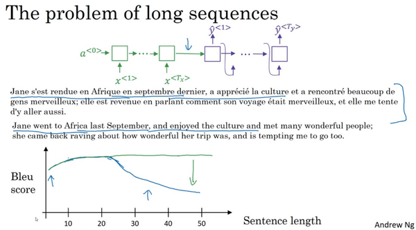
像这样给定一个很长的法语句子，在你的神经网络中，这个绿色的编码器要做的就是读整个句子，然后记忆整个句子，再在感知机中传递（to read in the whole sentence and then memorize the whole sentences and store it in the activations conveyed her）。而对于这个紫色的神经网络，即解码网络（the decoder network）将生成英文翻译，Jane去年九月去了非洲，非常享受非洲文化，遇到了很多奇妙的人，她回来就嚷嚷道，她经历了一个多棒的旅行，并邀请我也一起去。人工翻译并不会通过读整个法语句子，再记忆里面的东西，然后从零开始，机械式地翻译成一个英语句子。而人工翻译，首先会做的可能是先翻译出句子的部分，再看下一部分，并翻译这一部分。看一部分，翻译一部分，一直这样下去。你会通过句子，一点一点地翻译，因为记忆整个的像这样的的句子是非常困难的。你在下面这个编码解码结构中，会看到它对于短句子效果非常好，于是它会有一个相对高的Bleu分（Bleu score），但是对于长句子而言，比如说大于30或者40词的句子，它的表现就会变差。Bleu评分看起来就会像是这样，随着单词数量变化，短的句子会难以翻译，因为很难得到所有词。对于长的句子，效果也不好，因为在神经网络中，记忆非常长句子是非常困难的。在这个和下个视频中，你会见识到注意力模型，它翻译得很像人类，一次翻译句子的一部分。而且有了注意力模型，机器翻译系统的表现会像这个一样，因为翻译只会翻译句子的一部分，你不会看到这个有一个巨大的下倾（huge dip），这个下倾实际上衡量了神经网络记忆一个长句子的能力，这是我们不希望神经网络去做的事情。在这个视频中，我想要给你们注意力机制运行的一些直观的东西。然后在下个视频中，完善细节。
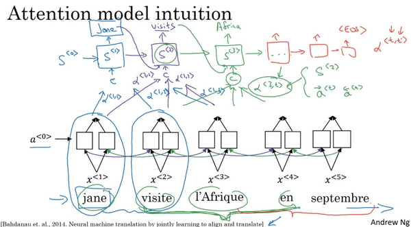
注意力模型源于Dimitri, Bahdanau, Camcrun Cho, Yoshe Bengio。（Bahdanau D, Cho K, Bengio Y. Neural Machine Translation by Jointly Learning to Align and Translate[J]. Computer Science,2014.）虽然这个模型源于机器翻译，但它也推广到了其他应用领域。我认为在深度学习领域，这个是个非常有影响力的，非常具有开创性的论文。
让我们用一个短句举例说明一下，即使这些思想可能是应用于更长的句子。但是用短句来举例说明，讲解这些思想会更简单。我们有一个很平常的句子：(法语)Jane visite l'Afrique en Septembre。假定我们使用RNN，在这个情况中，我们将使用一个双向的RNN（a bidirectional RNN），为了计算每个输入单词的的特征集（set of features），你必须要理解输出到一直到的双向RNN。但是我们并不是只翻译一个单词，让我们先去掉上面的，就用双向的RNN。我们要对单词做的就是，对于句子里的每五个单词，计算一个句子中单词的特征集，也有可能是周围的词，让我们试试，生成英文翻译。我们将使用另一个RNN生成英文翻译，这是我平时用的RNN记号。我不用来表示感知机（the activation），这是为了避免和这里的感知机（the activations）混淆。我会用另一个不同的记号，我会用来表示RNN的隐藏状态（the hidden state in this RNN），不用，而是用。我们希望在这个模型里第一个生成的单词将会是Jane，为了生成Jane visits Africa in September。于是等式就是，当你尝试生成第一个词，即输出，那么我们应该看输入的法语句子的哪个部分？似乎你应该先看第一个单词，或者它附近的词。但是你别看太远了，比如说看到句尾去了。所以注意力模型就会计算注意力权重（a set of attention weights），我们将用来表示当你生成第一个词时你应该放多少注意力在这个第一块信息处。然后我们算第二个，这个叫注意力权重，它告诉我们当你尝试去计算第一个词Jane时，我们应该花多少注意力在输入的第二个词上面。同理这里是，接下去也同理。这些将会告诉我们，我们应该花多少注意力在记号为的内容上。这就是RNN的一个单元，如何尝试生成第一个词的，这是RNN的其中一步，我们将会在下个视频中讲解细节。对于RNN的第二步，我们将有一个新的隐藏状态，我们也会用一个新的注意力权值集(a new set of the attention weights),我们将用来告诉我们什么时候生成第二个词, 那么visits就会是第二个标签了(the ground trip label)。我们应该花多少注意力在输入的第一个法语词上。然后同理，接下去也同理，我们应该花多少注意力在visite词上，我们应该花多少注意在词l'Afique上面。当然我们第一个生成的词Jane也会输入到这里，于是我们就有了需要花注意力的上下文。第二步，这也是个输入，然后会一起生成第二个词，这会让我们来到第三步，这是输入，我们再有上下文C，它取决于在不同的时间集（time sets）,上面的。这个告诉了我们我们要花注意力在不同的法语的输入词上面。 然后同理。有些事情我还没说清楚，但是在下个视频中，我会讲解一些细节，比如如何准确定义上下文，还有第三个词的上下文，是否真的需要去注意句子中的周围的词。这里要用到的公式以及如何计算这些注意力权重（these attention weights），将会在下个视频中讲解到。在下个视频中你会看到，即当你尝试去生成第三个词，应该是l'Afique，就得到了右边这个输出，这个RNN步骤应该要花注意力在时的法语词上，这取决于在时的双向RNN的激活值。那么它应该是取决于第四个激活值，它会取决于上一步的状态，它会取决于。然后这些一起影响你应该花多少注意在输入的法语句子的某个词上面。我们会在下个视频中讲解这些细节。但是直观来想就是RNN向前进一次生成一个词，在每一步直到最终生成可能是<EOS>。这些是注意力权重，即告诉你，当你尝试生成第个英文词，它应该花多少注意力在第个法语词上面。当生成一个特定的英文词时，这允许它在每个时间步去看周围词距内的法语词要花多少注意力。
我希望这个视频传递了关于注意力模型的一些直观的东西。我们现在可能对算法的运行有了大概的感觉，让我们进入到下个视频中，看看具体的细节。
3.8注意力模型（Attention Model）
在上个视频中你已经见到了,注意力模型如何让一个神经网络只注意到一部分的输入句子。当它在生成句子的时候，更像人类翻译。让我们把这些想法转化成确切的式子，来实现注意力模型。
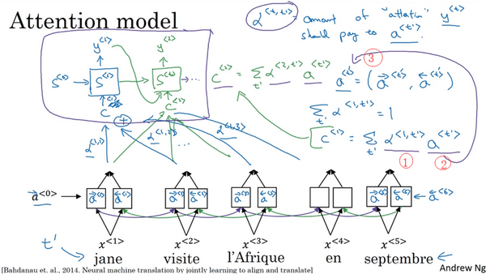
跟上个视频一样，我们先假定有一个输入句子，并使用双向的RNN，或者双向的GRU或者双向的LSTM，去计算每个词的特征。实际上GRU和LSTM经常应用于这个，可能LSTM更经常一点。对于前向传播（the forward occurrence），你有第一个时间步的前向传播的激活值（a forward occurrence first time step），第一个时间步后向传播的激活值，后向的激活值，以此类推。他们一共向前了五个时间步，也向后了五个时间步，技术上我们把这里设置为0。我们也可以后向传播6次，设一个都是0的因子，实际上就是个都是0的因子。为了简化每个时间步的记号，即使你在双向RNN已经计算了前向的特征值和后向的特征值，我就用来一起表示这些联系。所以就是时间步上的特征向量。但是为了保持记号的一致性，我们用第二个，也就是，实际上我将用来索引法语句子里面的词。接下来我们只进行前向计算，就是说这是个单向的RNN，用状态表示生成翻译。所以第一个时间步，它应该生成，当你输入上下文的时候就会这样，如果你想用时间来索引它，你可以写，但有时候我就写个，就是没有上标的，这个会取决于注意力参数，即，以此类推，告诉我们应该花多少注意力。同样的，这个参数告诉我们上下文有多少取决于我们得到的特征，或者我们从不同时间步中得到的激活值。所以我们定义上下文的方式实际上来源于被注意力权重加权的不同时间步中的特征值。于是更公式化的注意力权重将会满足非负的条件，所以这就是个0或正数，它们加起来等于1。我们等会会见到我们如何确保这个成立，我们将会有上下文，或者说在时的上下文，我会经常省略上标，这就会变成对的求和。这个权重的所有的值，加上这些激活值。所以这里的这项（上图编号1所示）就是注意力权重，这里的这项（上图编号2）来自于这里（上图编号3），于是就是应该在时花在上注意力的数量。换句话来说，当你在处生成输出词，你应该花多少注意力在第个输入词上面，这是生成输出的其中一步。然后下一个时间步，你会生成第二个输出。于是相似的，你现在有了一个新的注意力权重集，再找到一个新的方式将它们相加，这就产生了一个新的上下文，这个也是输入，且允许你生成第二个词。只有现在才用这种方式相加，它会变成第二个时间步的上下文。即对的进行求和，于是使用这些上下文向量，写到这里，也同理。这里的神经网络看起来很像相当标准的RNN序列，这里有着上下文向量作为输出，我们可以一次一个词地生成翻译，我们也定义了如何通过这些注意力权重和输入句子的特征值来计算上下文向量。剩下唯一要做的事情就是定义如何计算这些注意力权重。让我们下张幻灯片看看。
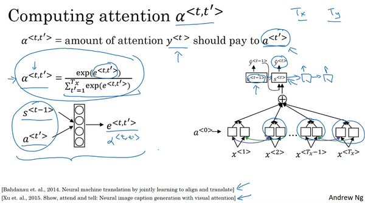
回忆一下，是你应该花费在上的注意力的数量，当你尝试去生成第个输出的翻译词，让我们先把式子写下来，再讨论它是怎么来的。这个式子你可以用来计算，在此之前我们要先计算，关键要用softmax，来确保这些权重加起来等于1。如果你对求和，比如每一个固定的值，这些加起来等于1。如果你对求和，然后优先使用softmax，确保这些值加起来等于1。
现在我们如何计算这些项，一种我们可以用的方式是用下面这样的小的神经网络，于是就是神经网络在上个时间步的状态，于是这里我们有一个神经网络，如果你想要生成，那么就是上一时间步的隐藏状态，即。这是给小神经网络的其中一个输入，也就是在神经网络中的一个隐藏层，因为你需要经常计算它们，然后，即上个时间步的的特征是另一个输入。直观来想就是，如果你想要决定要花多少注意力在的激活值上。于是，似乎它会很大程度上取决于你上一个时间步的的隐藏状态的激活值。你还没有当前状态的激活值，因为上下文会输入到这里，所以你还没计算出来，但是看看你生成上一个翻译的RNN的隐藏状态，然后对于每一个位置，每一个词都看向他们的特征值，这看起来很自然，即和应该取决于这两个量。但是我们不知道具体函数是什么，所以我们可以做的事情就是训练一个很小的神经网络，去学习这个函数到底是什么。相信反向传播算法，相信梯度下降算法学到一个正确的函数。这表示，如果你应用这整个的模型，然后用梯度下降来训练它，这是可行的。这个小型的神经网络做了一件相当棒的事情，告诉你应该花多少注意力在上面，然后这个式子确保注意力权重加起来等于1，于是当你持续地一次生成一个词，这个神经网络实际上会花注意力在右边的这个输入句子上，它会完全自动的通过梯度下降来学习。
这个算法的一个缺点就是它要花费三次方的时间，就是说这个算法的复杂是的，如果你有个输入单词和个输出单词，于是注意力参数的总数就会是，所以这个算法有着三次方的消耗。但是在机器翻译的应用上，输入和输出的句子一般不会太长，可能三次方的消耗是可以接受，但也有很多研究工作，尝试去减少这样的消耗。那么讲解注意想法在机器翻译中的应用，就到此为止了。虽然没有讲到太多的细节，但这个想法也被应用到了其他的很多问题中去了，比如图片加标题（image captioning），图片加标题就是看一张图，写下这张图的标题。底下的这篇论文来源于Kevin Chu，Jimmy Barr, Ryan Kiros, Kelvin Shaw, Aaron Korver, Russell Zarkutnov, Virta Zemo, 和 Andrew Benjo。他们也显示了你可以有一个很相似的结构看图片，然后，当你在写图片标题的时候，一次只花注意力在一部分的图片上面。如果你感兴趣，那么我鼓励你，也去看看这篇论文，做一些编程练习。
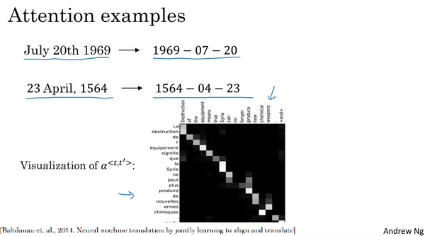
因为机器翻译是一个非常复杂的问题，在之前的练习中，你应用了注意力，在日期标准化的问题（the date normalization problem）上面，问题输入了像这样的一个日期，这个日期实际上是阿波罗登月的日期，把它标准化成标准的形式，或者这样的日期。用一个序列的神经网络，即序列模型去标准化到这样的形式，这个日期实际上是威廉·莎士比亚的生日。一般认为是这个日期正如你之前联系中见到的，你可以训练一个神经网络，输入任何形式的日期，生成标准化的日期形式。其他可以做的有意思的事情是看看可视化的注意力权重（the visualizations of the attention weights）。这个一个机器翻译的例子，这里被画上了不同的颜色，不同注意力权重的大小，我不想在这上面花太多时间，但是你可以发现，对应的输入输出词，你会发现注意力权重，会变高，因此这显示了当它生成特定的输出词时通常会花注意力在输入的正确的词上面，包括学习花注意在哪。 在注意力模型中，使用反向传播时， 什么时候学习完成。
这就是注意力模型，在深度学习中真的是个非常强大的想法。在本周的编程练习中，我希望你可以享受自己应用它的过程。
3.9语音识别（Speech recognition）
现今，最令人振奋的发展之一，就是seq2seq模型（sequence-to-sequence models）在语音识别方面准确性有了很大的提升。这门课程已经接近尾声，现在我想通过剩下几节视频，来告诉你们，seq2seq模型是如何应用于音频数据的（audio data），比如语音（the speech）。
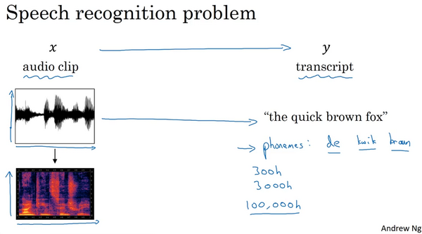
什么是语音视频问题呢？现在你有一个音频片段（an audio clip,x），你的任务是自动地生成文本。现在有一个音频片段，画出来是这样，该图的横轴是时间。一个麦克风的作用是测量出微小的气压变化，现在你之所以能听到我的声音，是因为你的耳朵能够探测到这些微小的气压变化，它可能是由你的扬声器或者耳机产生的，也就是像图上这样的音频片段，气压随着时间而变化。假如这个我说的音频片段的内容是："the quick brown fox"(敏捷的棕色狐狸)，这时我们希望一个语音识别算法（a speech recognition algorithm），通过输入这段音频，然后输出音频的文本内容。考虑到人的耳朵并不会处理声音的原始波形，而是通过一种特殊的物理结构来测量这些，不同频率和强度的声波。音频数据的常见预处理步骤，就是运行这个原始的音频片段，然后生成一个声谱图（a spectrogram），就像这样。同样地，横轴是时间，纵轴是声音的频率（frequencies），而图中不同的颜色，显示了声波能量的大小（the amount of energy），也就是在不同的时间和频率上这些声音有多大。通过这样的声谱图，或者你可能还听过人们谈到过伪空白输出（the false blank outputs），也经常应用于预处理步骤，也就是在音频被输入到学习算法之前，而人耳所做的计算和这个预处理过程非常相似。语音识别方面，最令人振奋的趋势之一就是曾经有一段时间，语音识别系统是用音位（phonemes）来构建的，也就是人工设计的基本单元（hand-engineered basic units of cells），如果用音位来表示"the quick brown fox"，我这里稍微简化一些，"the"含有"th"和"e"的音，而"quick"有"k" "w" "i" "k"的音，语音学家过去把这些音作为声音的基本单元写下来，把这些语音分解成这些基本的声音单元，而"brown"不是一个很正式的音位，因为它的音写起来比较复杂，不过语音学家（linguists）们认为用这些基本的音位单元（basic units of sound called phonemes）来表示音频（audio），是做语音识别最好的办法。不过在end-to-end模型中，我们发现这种音位表示法（phonemes representations）已经不再必要了，而是可以构建一个系统，通过向系统中输入音频片段（audio clip），然后直接输出音频的文本（a transcript），而不需要使用这种人工设计的表示方法。使这种方法成为可能的一件事就是用一个很大的数据集，所以语音识别的研究数据集可能长达300个小时，在学术界，甚至3000小时的文本音频数据集，都被认为是合理的大小。大量的研究，大量的论文所使用的数据集中，有几千种不同的声音，而且，最好的商业系统现在已经训练了超过1万个小时的数据，甚至10万个小时，并且它还会继续变得更大。在文本音频数据集中（Transcribe audio data sets）同时包含和，通过深度学习算法大大推进了语音识别的进程。那么，如何建立一个语音识别系统呢？
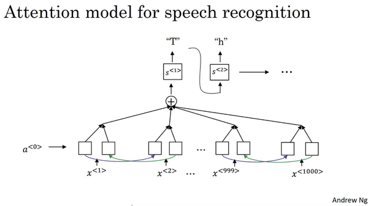
在上一节视频中，我们谈到了注意力模型，所以，一件你能做的事就是在横轴上，也就是在输入音频的不同时间帧上，你可以用一个注意力模型，来输出文本描述，如"the quick brown fox"，或者其他语音内容。
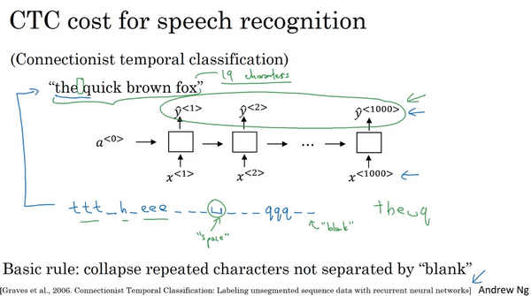
还有一种效果也不错的方法，就是用CTC损失函数（CTC cost）来做语音识别。CTC就是Connectionist Temporal Classification，它是由Alex Graves、Santiago Fernandes, Faustino Gomez、和Jürgen Schmidhuber提出的。（Graves A, Gomez F. Connectionist temporal classification:labelling unsegmented sequence data with recurrent neural networks[C]// International Conference on Machine Learning. ACM, 2006:369-376.）
算法思想如下:
假设语音片段内容是某人说："the quick brown fox"，这时我们使用一个新的网络，结构像这个样子，这里输入和输出的数量都是一样的，因为我在这里画的，只是一个简单的单向RNN结构。然而在实际中，它有可能是双向的LSTM结构，或者双向的GIU结构，并且通常是很深的模型。但注意一下这里时间步的数量，它非常地大。在语音识别中，通常输入的时间步数量（the number of input time steps）要比输出的时间步的数量（the number of output time steps）多出很多。举个例子，比如你有一段10秒的音频，并且特征（features）是100赫兹的，即每秒有100个样本，于是这段10秒的音频片段就会有1000个输入，就是简单地用100赫兹乘上10秒。所以有1000个输入，但可能你的输出就没有1000个字母了，或者说没有1000个字符。这时要怎么办呢？CTC损失函数允许RNN生成这样的输出：ttt，这是一个特殊的字符，叫做空白符，我们这里用下划线表示，这句话开头的音可表示为h_eee_ _ _，然后这里可能有个空格，我们用这个来表示空格，之后是_ _ _qqq__，这样的输出也被看做是正确的输出。下面这段输出对应的是"the q"。CTC损失函数的一个基本规则是将空白符之间的重复的字符折叠起来，再说清楚一些，我这里用下划线来表示这个特殊的空白符（a special blank character），它和空格（the space character）是不一样的。所以the和quick之间有一个空格符，所以我要输出一个空格，通过把用空白符所分割的重复的字符折叠起来，然后我们就可以把这段序列折叠成"the q"。这样一来你的神经网络因为有很多这种重复的字符，和很多插入在其中的空白符（blank characters），所以最后我们得到的文本会短上很多。于是这句"the quick brown fox"包括空格一共有19个字符，在这样的情况下，通过允许神经网络有重复的字符和插入空白符使得它能强制输出1000个字符，甚至你可以输出1000个值来表示这段19个字符长的输出。这篇论文来自于Alex Grace以及刚才提到的那些人。我所参与的深度语音识别系统项目就使用这种思想来构建有效的语音识别系统。
希望这能给你一个粗略的理解，理解语音识别模型是如何工作的：注意力模型是如何工作的，以及CTC模型是如何工作的，以及这两种不同的构建这些系统的方法。现今，在生产技术中，构建一个有效语音识别系统，是一项相当重要的工作，并且它需要很大的数据集，下节视频我想做的是告诉你如何构建一个触发字检测系统（a rigger word detection system），其中的关键字检测系统（keyword detection system）将会更加简单，它可以通过一个更简洁的数量更合理的数据来完成。所以我们下节课再见。
3.10触发字检测（Trigger Word Detection）
现在你已经学习了很多关于深度学习和序列模型的内容，于是我们可以真正去简便地描绘出一个触发字系统（a trigger word system），就像上节视频中你看到的那样。随着语音识别的发展，越来越多的设备可以通过你的声音来唤醒，这有时被叫做触发字检测系统（rigger word detection systems）。我们来看一看如何建立一个触发字系统。

触发字系统的例子包括Amazon echo，它通过单词Alexa唤醒；还有百度DuerOS设备，通过"小度你好"来唤醒；苹果的Siri用Hey Siri来唤醒；Google Home使用Okay Google来唤醒，这就是触发字检测系统。假如你在卧室中，有一台Amazon echo，你可以在卧室中简单说一句: Alexa, 现在几点了?就能唤醒这个设备。它将会被单词"Alexa"唤醒，并回答你的询问。如果你能建立一个触发字检测系统，也许你就能让你的电脑通过你的声音来执行某些事，我有个朋友也在做一种用触发字来打开的特殊的灯，这是个很有趣的项目。但我想教会你的，是如何构建一个触发字检测系统。
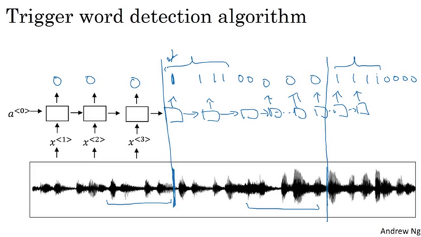
有关于触发字检测系统的文献，还处于发展阶段。对于触发字检测，最好的算法是什么，目前还没有一个广泛的定论。我这里就简单向你介绍一个你能够使用的算法好了。现在有一个这样的RNN结构，我们要做的就是把一个音频片段（an audio clip）计算出它的声谱图特征（spectrogram features）得到特征向量, , ..，然后把它放到RNN中，最后要做的，就是定义我们的目标标签。假如音频片段中的这一点是某人刚刚说完一个触发字，比如"Alexa"，或者"小度你好" 或者"Okay Google"，那么在这一点之前，你就可以在训练集中把目标标签都设为0，然后在这个点之后把目标标签设为1。假如在一段时间之后，触发字又被说了一次，比如是在这个点说的，那么就可以再次在这个点之后把目标标签设为1。这样的标签方案对于RNN来说是可行的，并且确实运行得非常不错。不过该算法一个明显的缺点就是它构建了一个很不平衡的训练集（a very imbalanced training set），0的数量比1多太多了。
这里还有一个解决方法，虽然听起来有点简单粗暴，但确实能使其变得更容易训练。比起只在一个时间步上去输出1，其实你可以在输出变回0之前，多次输出1，或说在固定的一段时间内输出多个1。这样的话，就稍微提高了1与0的比例，这确实有些简单粗暴。在音频片段中，触发字刚被说完之后，就把多个目标标签设为1，这里触发字又被说了一次。说完以后，又让RNN去输出1。在之后的编程练习中，你可以进行更多这样的操作，我想你应该会对自己学会了这么多东西而感到自豪。我们仅仅用了一张幻灯片来描述这种复杂的触发字检测系统。在这个基础上，希望你能够实现一个能有效地让你能够检测出触发字的算法，不过在编程练习中你可以看到更多的学习内容。这就是触发字检测，希望你能对自己感到自豪。因为你已经学了这么多深度学习的内容，现在你可以只用几分钟时间，就能用一张幻灯片来描述触发字能够实现它，并让它发挥作用。你甚至可能在你的家里用触发字系统做一些有趣的事情，比如打开或关闭电器，或者可以改造你的电脑，使得你或者其他人可以用触发字来操作它。
这是深度学习课程最后一个技术视频，所以总结一下我们对序列模型的学习。我们学了RNN，包括GRU和LSTM，然后在上一周我们学了词嵌入（word embeddings），以及它们如何学习词汇的表达（how they learn representations of words）。在这周还学了注意力模型（the attention model）以及如何使用它来处理音频数据（audio data）。希望你在编程练习中实现这些思想的时候，能够体会到诸多乐趣。接下来我们来看最后一个视频。
3.11结论和致谢（Conclusion and thank you）
恭喜你能走到这一步，在最后这节视频中，只想做个总结，并给你一些最后的想法。

我们一起经历了一段很长的旅程，如果你已经学完了整个专业的课程，那么现在你已经学会了神经网络和深度学习，如何改进深度神经网络，如何结构化机器学习项目，和卷积神经网络。在最近的课程中还学了序列模型，我知道你为此非常努力，也希望你能对自己感到自豪，为你的努力，为你所做的这一切。
我想向你传达一个对你来说可能很重要的想法。就是我觉得深度学习是一种超能力，通过深度学习算法，你可以让计算机拥有"视觉"（make a computer see），可以让计算机自己合成小说（synthesize novel art），或者合成音乐（synthesized music），可以让计算机将一种语言翻译成另一种（translate from one language to another），或者对放射影像进行定位然后进行医疗诊断（Maybe have it located radiology image and render a medical diagnosis），或者构建自动驾驶系统（build pieces of a car that can drive itself）。如果说这还不是超能力的话，那还能是什么呢？当我们结束这一系列课程的时候，结束整个专业的时候，我希望你能够使用这些思想来发展你的事业，追逐你的梦想，但最重要的是，去做你认为最合适的能对人类有贡献的事。这个世界现在面临着诸多挑战，但是在这种力量下，在人工智能和深度学习的力量下，我觉得我们可以让世界变得更美好。现在这种超能力就掌握在你的手中，去突破障碍，让生活变得更好，这不单单是为自己，也是为了其他人。当然我也希望你能够对自己取得的成就以及你学到的一切感到自豪。当你完成这一系列课程的学习后，我想你可以把课程分享到社交媒体上，比如Twitter和Facebook，让你的朋友也能知道这门课程。
最后，我想告诉你的最后一件事，就是恭喜你完成了这门课程的学习，为自己所取得的成就欢呼吧！同时也非常感谢你们，因为我知道大家都很忙，即便如此你们还是花了很多时间来学习这些视频，可能还花了很多时间来做课堂测验还有编程练习，希望你们能够乐在其中，并学到很多算法流程。我很荣幸你们能够花费时间，付诸精力，来学习这些东西，非常感谢大家！